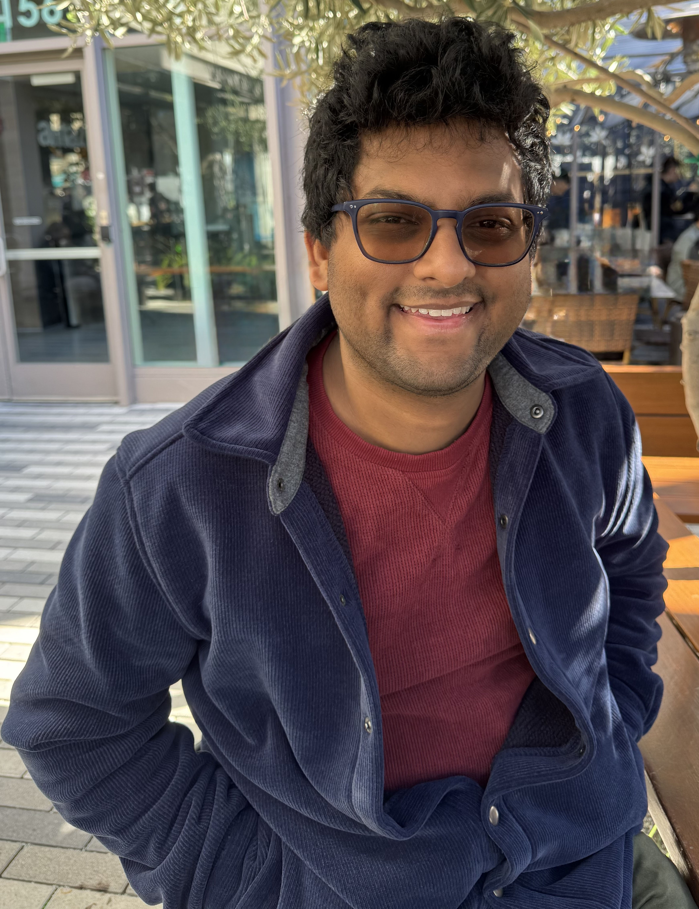

Prasanna RamakrishnanEmail: pras1712 [at] stanford [dot] eduI'm a PhD student at Stanford University in the CS Theory group. I'm fortunate to be co-advised by Moses Charikar and Li-Yang Tan. |
 |
Research
-
Approximately dominating sets in elections
SODA 2026 -
Fair metric distortion for matching with preferences
WINE 2025 -
Metric distortion for tournament voting and beyond
EC 2025 -
Six candidates suffice to win a voter majority
STOC 2025
-
Breaking the metric voting distortion barrier
Journal of the ACM, 2024
SODA 2024 (Best Paper Award)
Invited to Highlights Beyond EC 2024
and Highlights of Algorithms (HALG) 2025
Video: EC -
Distortion in metric matching with ordinal preferences
EC 2023
Video: EC -
The composition complexity of majority
CCC 2022
Video: CCC (Victor) -
Tradeoffs for small-depth Frege proofs
FOCS 2021
Video: FOCS -
Metric distortion bounds for randomized social choice
SODA 2022
Video: SODA -
On taking advantage of multiple requests in error correcting codes
ISIT 2018
Expository
-
Optimal metric distortion for voting
—a proof from the book
A blog post based on the works of Kizilkaya—Kempe and Gkatzelis—Halpern—Shah. -
Independent sets in Hasse diagrams
My undergraduate thesis, advised by Jacob Fox. Based on work with Nitya Mani.
Professional Activities
-
Social Choice and Learning, workshop at the Bellairs Research Institute, Barbados
co-organized with Moses Charikar and Adrian Vetta. -
Distortion in Social Choice, workshop at FOCS 2024
co-organized with Moses Charikar, Nisarg Shah, and Kangning Wang.